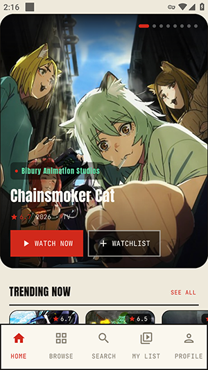
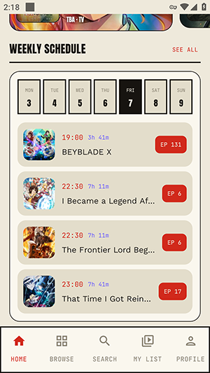

aniwave 到底是个什么东西？一篇给新手的快问快答
整理九个关于 aniwave 安卓应用的高频问题——它是什么、怎么装、怎么找番、和那些同名网站什么关系，一次讲清。
整理一篇关于 aniwave 的快问快答。网上关于这个名字的信息散得很，同名网站一堆、口径互相打架，第一次碰到的人很容易被绕晕。下面这九个问题，是我从实际使用和资料核对里攒出来的——每个问题的答案都尽量第一句就给结论，不绕弯子。

aniwave 到底是什么？是网站还是 APP？
结论：这里说的 aniwave 是一份安卓 APK 安装包，它的官网上也没有提供下载渠道，和网上搜到的那些同名网站没有从属关系。
你在搜索引擎里敲 aniwave，出来的会是一堆互相独立的动漫网站——有的自称官方、有的自称继任者、还有的互相提醒「没有官方应用」。但这些网站和这份安卓包不是一家的。这份包有自己明确的版本号（1.0.0-debug）、包名（com.aniwavestream.app.debug），大小约 24MB，界面语言是英文。它背后的开发者是谁，公开资料里查不到，就像很多社区流传的安卓工具包一样。
所以装之前先把心态摆正：它是一份社区采集来的安卓应用，不是某个正规公司在应用商店上架的产品。评估它只看安装包本身的指纹和你实际体验到的功能，别拿那些同名网站的介绍来套。
谁需要装这个？什么人不适合？
结论：想在手机上方便地浏览和追番的人可以装；只看正版、只信任应用商店渠道的人不需要。
适合的场景大概是这几种：你已经习惯用手机看番，不想每次都开浏览器找网页；你同时追好几部新番，需要一个地方集中管理更新和收藏；你不在意应用是否在 Google Play 上架，能接受从第三方渠道获取安装包。
不适合的情况也很明确：你只用 App Store 或 Google Play 装应用，不会放行「未知来源」；你只看正版授权平台，对社区来源的软件有顾虑；你手里只有 iOS 设备——这个包是纯 APK，苹果手机装不了，而且 App Store 里那个同名应用是另一家开发者的另一款产品，功能完全不同。
怎么装？有什么前置条件？
结论：安卓 5.2 以上系统，放行未知来源，下载后校验 MD5 再安装。
系统门槛不高，采集记录标注安卓 5.2 以上就能跑。安装流程和绝大多数第三方 APK 一样：先从aniwave下载拿到安装包 → 手机设置里放行未知来源 → 点开安装。但有一个步骤别跳过——校验 MD5。这份包的指纹是 4533B4D444D51543BF25AB29E21243FE，装之前对一下，确认文件没被篡改。安装包本体约 24MB，加上运行缓存建议手机留出 100MB 以上余量。
界面长什么样？第一次打开会不会懵？
结论：英文界面但结构很直观，四个主要标签就能覆盖所有操作。
打开之后首页是 HOME 标签，上面有大图推荐、热门横排、本季热门区块和周播表。底部四个标签分别是 HOME、BROWSE、SEARCH，还有一个追番管理相关的入口。整个应用的导航逻辑是「从浏览到播放到收藏」，和大多数流媒体应用的直觉一致，上手不需要花时间适应。唯一可能让人愣一下的是全英文界面——但动漫应用里的词汇量不大，翻两番就熟了。

找番有几种方式？哪种最快？
结论：六条路径，有目标走搜索，没目标走浏览，追新番认准周播表。
这个应用提供的找番入口比预想的多，按场景分一下就清楚了：
- 明确知道片名或角色名：直接走 SEARCH 标签的关键词搜索，永远最快
- 就是想看点当期热门：停留在 HOME 标签的大图推荐和热门横排就行
- 想按题材或年份翻库：切到 BROWSE 标签，里面有「全部 / 题材 / 年份」三档筛选
- 只记得片名首字母：BROWSE 里有一整行 A-Z 字母索引
- 想知道本季有什么能追：首页往下滑找到「本季热门」区块
- 想按更新时间追新番：首页的 WEEKLY SCHEDULE 周播表，按周几排列更新中的番
选路的经验其实就两条：有目标别犹豫直接搜；追新番别每天盲刷收藏，看周播表排好时间再打开。

播放体验怎么样？画质、字幕这些有吗？
结论：播放功能是完整的，画质和字幕取决于片源本身，应用端主要提供基础的播放控制。
找到番剧点进去之后是详情页，往下滑到选集列表，点任意一集就进入播放。标准的播放控件都有：进度拖动、快进快退、全屏切换。画质和字幕不是应用本身决定的，而是片源带什么就是什么——不同番剧、不同集数之间可能有差异，这不是应用的 bug。如果你习惯了某些平台的高清画质或特定字幕样式，可能需要适应一下，更详细的播放参数可以去aniwave文档翻一下。
追番管理怎么做？收藏列表好用吗？
结论：追到想追的番当场加收藏，之后在追番管理入口里统一查看和排序。
这个应用的追番管理逻辑不复杂——在详情页或播放页找到收藏按钮点一下就行，之后想追哪些、哪些更新了，都在管理入口里看得到。对于同时追三四部以上新番的人来说，有一个集中管理的地方总比在浏览器书签里翻来翻去强。但它也没有什么特别高级的功能，比如自定义分类、标签分组之类的——就是一个实用够用的收藏列表。
有什么坑要提前知道？
结论：三个常见坑——iOS 装不了、版本号对不上、同名网站别信。
第一个坑已经提过了：这是纯 APK，iOS 用户绕道。第二个坑是版本号——你可能在别的地方看到 aniwave 的版本信息，和这份包的 1.0.0-debug 对不上。别纠结，网上那些同名网站根本没有版本号概念，涉及版本、包名、大小一律以这份包的指纹信息为准。第三个坑是同名网站——真的别在应用和网站之间找什么「配套关系」，也别用网站的功能描述来预期应用的表现。网站介绍的什么镜像站切换、网页端播放器，跟你手机上这份 APK 是两套东西。
值不值得长期用？卸载有成本吗？
结论：如果你的找番需求稳定、能接受社区来源的软件，值得留着；卸载没有任何成本。
长期使用的前提其实很简单：你觉得找番和播放的体验够顺手、收藏列表确实帮你省了事、也不在意应用是英文界面和社区来源。如果这几点里有两点以上让你不舒服，那它可能就是个新鲜两天就会被你忘掉的应用。卸载完全没有成本——没有账号体系、没有云端数据绑定，直接卸载就干净。
最后一句：能接受第三方渠道、想要一个手机端追番工具的话，装来试试不会亏；只信应用商店的话，从第一步就不用往下走。这份整理好的资料我顺手同步到了三个仓库，GitHub 上能找到完整条目，国内访问不方便的话换 Gitee 或 GitCode 都能拿到：GitHub、Gitee、GitCode。